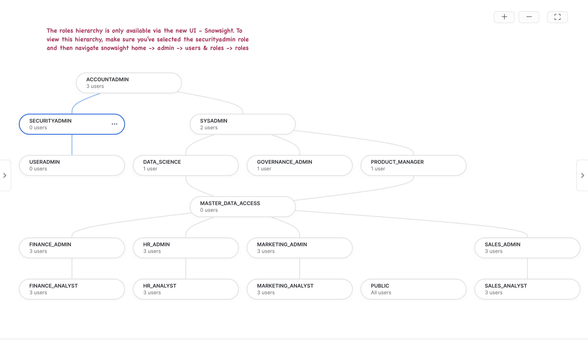
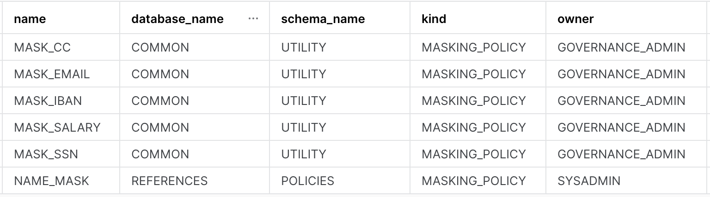

"By failing to prepare, you are preparing to fail" - Benjamin Franklin
A sound business continuity/disaster recovery plan is an important milestone for organizations looking to build resilient data platforms. We are in the information age and data-driven insights grow revenue, provide services, support customers and aid with critical decision making. Digital transformation is the need of the hour and in this important endeavor businesses face many forms of disruptions like fire, floods, cyberattacks, ransomware etc. These disruptions can spiral into various undesirable outcomes - from operational systems coming to a standstill leading to financial losses to something worse, like reputational damage.
Technology is the center-piece of all businesses and mission-critical data can never be unavailable. As businesses become cloud-based, new complexity arises. Namely, business continuity and continuous global operations rely even more on cloud dependability.
Snowflake's new Group-Based Replication and Failover feature (in preview) enables account metadata, including everything from user identity and role-based access controls to governance policies, warehouses and resource monitors, to be automatically synchronized across clouds and regions for continuous availability. Multiple databases, shares and account metadata can be replicated as a unit, ensuring point-in-time consistency with the primary region.
Snowflake's Client Redirect feature facilitates seamless failover from primary to secondary so that apps and users can continue functioning without disruption. In the past, to recover, the connection string in every client application had to be manually changed to connect to the new primary site (the former secondary site) in a different region or cloud. With Client Redirect, administrators can use a single server-side command to redirect client applications to the new primary site, without disrupting business teams.
Prerequisites
- Basic understanding of Snowflake concepts, familiarity with Snowflake UI.
- Two snowflake trial accounts, preferably in different regions and different cloud platforms. Designate any one of them as the primary account and the other one will be secondary. The instructions in this guide will ask you to fire specific commands on source and target accounts. So remember (or make a note) of your primary and secondary account names to avoid confusion.
- Account replication preview feature enabled on both trial accounts. If you've applied for this lab in advance and provided your account details, this should already be enabled for you by the Snowflake team. Verify that account replication has been enabled for both your accounts with the command below
use role ACCOUNTADMIN;
show replication accounts;
- The organization administrator (ORGADMIN role) must enable replication for the source and target accounts before replicating a database as documented here. For the Summit Lab, your Snowflake team will ensure this is done for the two trial accounts.
- Accountadmin access on both trial accounts.
- Failover App: BI Sigma Dashboard
- A sigma trial account that is valid on the day of the lab. The trial account is valid for 14 days from the day of signing up. You can sign for the trial account directly from the sigmacomputing free trial link or from your Snowflake UI by clicking on "Partner Connect" -> Click on "Sigma" tile.
- Failover App: Python Streamlit Dashboard - Install the following modules/connectors. Minimum python version needed is 3.7
- snowflake python connector
- streamlit (pip/pip3 install streamlit)
- streamlit-echarts (pip/pip3 install streamlit-echarts)
- Pandas (pip/pip3 install pandas)
- Json (pip/pip3 install json)
- Failover App: SnowSQL
- Access to SNOWFLAKE_SAMPLE_DATA share.
What You'll Learn
In this quickstart you will learn
- How to use out of the box features available in Snowflake to build resiliency against region failures.
- Group based replication and failover of account objects.
- Database replication (as part of the group) from primary to secondary.
- Account object replication (users, roles, WHs, resource monitors, data shares) from primary to secondary.
- How to keep a DR instance ready to serve as exact replica of the primary instance - with upto date data and governance policies.
- How to trigger failover of replication/failover groups and client connections.
What You'll Need
- Python installed on local machine to stimulate a python app failover (Needed for streamlit app).
- A Sigma trial account to stimulate a BI dashboard failover (Needed for Sigma BI app).
- Our source data is based on the TPC-DS benchmark dataset that is shared with all Snowflake accounts by default. If you don't see that share, you can create it with below commands.
use role ACCOUNTADMIN;
create database SNOWFLAKE_SAMPLE_DATA from share SFC_SAMPLES.SAMPLE_DATA;
grant imported privileges on database SNOWFLAKE_SAMPLE_DATA to role PUBLIC;
What You'll Build
- Source account resources to mimic a production grade Snowflake account.
- Replicate/Failover selective resources to a secondary account in a transactionally consistent fashion.
- Build apps powered by primary snowflake account.
- Failover from primary to secondary account.
- Observe your apps now seamlessly powered by the secondary account.
Download scripts to populate your source account from this Github repository as a ZIP
OR clone to a directory in your local machine with the below command
git clone https://github.com/Snowflake-Labs/vhol_failover_scripts.git
After downloading the code you should see numbered sql scripts in the scripts folder. The sequence also determines their order of execution.
Execute the below scripts (100 - 600) on your source account. Script 300 needs to have the generic user name replaced in order for it to run without issues. Make sure you replace the user name before running the 300 script as instructed below.
- 100_create_env_resources_source.sql: Create roles, roles hierarchy, databases and warehouses.
- 200_create_users_source.sql: Create user base.
- 300_roles_privileges_assignment_source.sql: Grant object privileges to roles and grant roles to create personas. Be sure to replace user name "REPLACEME" with your own admin user.
- 400_ingest_data_source.sql: Create tables and data share and ingests data in tables.
- 500_governance_policies_source.sql: Create and assign object tags, masking policies and row access policy.
- 600_update_primary_task.sql: Create and start task to update primary tables every 3 minutes.
You can run these scripts via UI by copy/pasting them or importing them as shown below. For some of our seasoned Snowflake users - if you have installed our awesome CLI SnowSQL and are comfortable pointing it to your source account for the lab, feel free to use that to execute the script. Make sure though that you pay attention to any errors encountered along the way.
Ingest Payroll Data
In the code base downloaded from Github earlier, there's a data/hr_data_sample.csv file that we'll now ingest in our "payroll.noam_northeast.employee_detail" table. We'll use the data loader functionality of the UI to achieve this (unfortunately, the data loader functionality is only available in the classic UI for now. Psst.. it will soon be available in snowsight as well!). Follow along the screenshots to load the data
Navigate to the table Databases -> Payroll -> Employee_detail
Select ETL_WH to load your data
Choose source file location
Create a new file format and call it "csv_format"
Choose following options for the file format
You should have successfully loaded 100 records
Our scripts in the previous step have created a production like snowflake environment for us. Here's a list of objects you just created when you ran those scripts:
- Users & Roles
- RBAC Hierarchy
- Databases
- Compute warehouses
- Data copied from the snowflake_sample_data share
- Direct data shares
- Dynamic data masking policies
- Row access policy
- Object tags
Phew! That's quite a list here's what all of this looks like in a picture:
Let's review our source account
Observe your RBAC
Below is what the roles hierarchy should look like in your source account. Do note that the roles hierarchy is only available via the new UI - Snowsight. Log on to Snowsight and assume the "securityadmin" role and then navigate to home -> admin -> users & roles -> roles.

Verify Row Access Policy
Our row access policy is applied to the global_sales.online_retail.customer table with the following rules:
- sales_analyst role should be able to see data for market segments ‘automobile' and ‘machinery'.
- sales_admin role should be able to see data for market segments ‘automobile', ‘machinery', ‘building' and ‘household'.
- product_manager role should be able to see data for ALL market segments.
- All other roles should not be able to see data for ANY market segment.
Below query when run with the sysadmin role should return 0 records, but when run with the sales_analyst, sales_admin or product_manaher role it should return results based on their privilege described above. Run the query once with each role - sysadmin, sales_analyst, sales_admin and product_manager and verify whether these rules are being adhered. Switch roles in your worksheet with the "use role <role_name>" command.
use role sysadmin;
use warehouse sales_wh;
select * from global_sales.online_retail.customer limit 100;
When we replicate our data and our account objects, row level security is applied to the target account as well. This ensures that your access rules around data are retained even on the DR instance.
Verify dynamic data masking policy
Our payroll.noam_northeast.employee_detail data contains critical PII data elements such as salary, ssn, email and iban. This is information that cannot be visible by everyone that has access to this data. We therefore deploy dynamic data masking policy protecting this dataset and only allowing authorized roles to see this information in the clear. The remaining roles would either see partially masked or completely redacted version of these columns, while having full visibility on other columns in this dataset that they can still use. Below are the rules of our dynamic data masking policy.
- email_address: hr_admin and product_manager roles can see complete email ids while all the other roles would see partially masked values, with only the domain name (@gmail.com, @yahoo.com) being visible.
- iban, credits_card and ssn: hr_admin and product_manager see ibans in the clear, all the other roles would see fully masked values.
- salary: hr_admin and product_manager see actual salaries and all the other roles would see 0.0
Run the query below with two different roles - hr_analyst and hr_admin, observe all fields in the return results. What values does hr_analyst see for email, iban, cc and salary columns? What values does the hr_admin see?
use role hr_analyst;
use warehouse hr_wh;
select * from payroll.noam_northeast.employee_detail limit 100;
Verify data shares
We've created a few data shares with different variations, we'll observe what permissions each of these shares have and whether these are replicated as is to our secondary account.
Below code snippet displays permissions on three data shares - GLOBAL_SALES_SHARE, INVENTORY_SHARE and CROSS_DATABASE_SHARE
use role accountadmin;
show grants to share global_sales_share;
show grants to share inventory_share;
show grants to share cross_database_share;
- GLOBAL_SALES_SHARE should have
- usage on global_sales DB
- usage on global_sales.online_retail schema
- select on customer, lineitem and nation tables in global_sales.online_retail schema
- INVENTORY_SHARE should have
- usage on products DB
- reference_usage on references DB
- usage on internal and public schema in the products DB
- usage on products.internal.item_quantity() table function
- CROSS_DATABASE_SHARE should have
- usage on cross_database DB
- reference_usage on references and sales DB
- usage on cross_database.public schema
- usage on cross_database.public.morning_sales view
Verify location, type and owner of governance policies
We have built 6 masking policies, 4 object tags and 2 row access policies that we use to protect our data. Observe their details like which schema are these policies kept in, who owns them etc.
use role governance_admin;
show masking policies;
show row access policies;
show tags;
The output of the three commands should look something like this:
Masking Policies:
Row Access Policy:
Object Tags:
Let the DR configuration Begin! (and finish, you'll breeze through these steps with the blink of the eye - it's that easy to setup DR configuration on Snowflake). This is where we make use of the account replication and client redirect features and setup two first class snowflake objects on the source account:
- Connection: The connection object stores a secure connection URL that you can use with any Snowflake client to connect to Snowflake.
- Failover group: It is a collection of objects in a source account that are replicated as a unit to one or more target accounts and can failover as a unit. A secondary failover group in a target account provides read-only access for the replicated objects. When a secondary failover group is promoted to become the primary failover group, read-write access is available.
Note values for orgname, source_account_name and target_account_name
Fire the command below and note down values for "organization_name" and "account_name" for source and target accounts. You will need these in order to setup DR resources on the source and target accounts
use role accountadmin;
show replication accounts;
Run these queries on source account
Substitue value of orgname and target_account_name (as noted above) in the commands below
use role accountadmin;
create connection sfsummitfailover;
alter connection sfsummitfailover enable failover to accounts <orgname.target_account_name>;
create failover group sales_payroll_failover
object_types = users, roles, warehouses, resource monitors, databases, shares
allowed_databases = global_sales,common,payroll,inventory,loyalty,sales,crm,products,references,cross_database,externals
allowed_shares = global_sales_share,sales_history_share, cross_database_share, crm_share, inventory_share
replication_allowed_to_accounts = <org_name.target_account_name>
failover_allowed_to_accounts = <org_name.target_account_name>;
Run these queries on target account
Here you'll create a secondary connection and a secondary failover group.
- A secondary connection is linked to the primary connection and must be created in an account in a different region from the source account. The secondary connection name must be the same as the primary connection name.
- Just like the secondary connection, a secondary failover group is also linked to it's corresponding primary failover group and must be created in an account in a different region from the source account and with the same name as the primary failover group.
Substitue value of orgname and source_account_name (as noted above) in the commands below
use role accountadmin;
create connection sfsummitfailover
as replica of <organame.source_account_name.SFSUMMITFAILOVER>;
create failover group SALES_PAYROLL_FAILOVER
as replica of <organame.source_account_name.SALES_PAYROLL_FAILOVER>;
Note the value for connection_url
Once you've setup your connection object successfully, we need to note the value for connection_url for our connection object. This URL is what we'll be using in all our application building from this point on. The url takes an account agnostic form (orgname-connection_name.snowflakecomputing.com) because it could be pointing to either account depending upon which one is primary.
#Fire command below and for the connection object created note the value of
#connection_url_ property. It is the 3rd last column in the result of the
# show connections command.
show connections;
Welcome app developers! this is where we have some fun, all of the hard work thus far with account setup, data curation, RBAC hierarchy and governance policy would be of no use if we're not powering apps that provide meaningful insights. It is after all these insightful apps that we want operational in case of an outage.
We have two options for you today to build quick and simple, snowflake powered apps that we'll see later, will continue to be operational (By failing over to the DR) once we simulate a region failure.
You can choose to build one of both of these.
- Option 1: For BI enthusiasts (Now is when that Sigma trial account will come in handy) - You'll be building a Sigma dashboard. Step by step instructions are available in the video below.
- Option 2: For the pythonistas in the house - you'll be playing with some streamlit and streamlit extensions magic (hopefully, it's already installed on your local machines. If not, don't stress - pip install streamlit & pips install streamlit-echarts is all you need). If you have the required libraries installed, you can leverage the code below - enter your credentials to your Snowflake account and run the streamlit app.
- Option3: If you're not in the mood to build, no problem. There's an easy (and unfotrunately boring) way to test this too. You can stick with the good ole snowflake UI or Snowflake's CLI tool - snowsql to connect to the url mentioned in the connection_url field and see which account did snowflake route you to?
Sigma BI Dashboard
In this step, we'll build a sigma dashboard that will rely on data available on our primary account. Once we replicate this data to our secondary account and failover, we'll see the sigma dashboard seamlessly point to the failover region and powered by our secondary account.
In the video, you will see we connect Sigma to Snowflake by creating a connection. When filling up the connection details ensure that account name is same as the value recorded for "connection_url" at the end of step 4.
Query used to build the global sales dashboard
Here's the code snippet used for charting the global revenue figures.
select n_name nation
, sum(o_totalprice) revenue
from global_sales.online_retail.orders
inner join global_sales.online_retail.customer on c_custkey = o_custkey
inner join global_sales.online_retail.nation on c_nationkey = n_nationkey
where o_orderdate between dateadd(day,-2,current_date) and current_date()
group by 1
order by 2 desc
Final Dashboard
Once you're done building the dashboard, the end result should look something like this
Python Streamlit App
Save the code below in a python file and run it with the command "streamlit run <your-python-filename.py>". Remember to substitute user_name, password and account_name (in the ctx object) for your account before running the script. The account_name should be same as the value recorded for "connection_url" at the end of step 4, you only need to include everything before ".snowflakecomputing.com".
#Save this python script in a file and run from terminal/command prompt as 'streamlit run <name_of_script>.py'
import snowflake.connector
import streamlit as st
import pandas as pd
import streamlit_echarts as ste
import json
# Snowflake connection details
ctx = snowflake.connector.connect(
user=<user_name>,
password=<password>,
#account name value should be that of connection_url from the show connections command. Everything before snowflakecomputing.com
account=<account_name>,
session_parameters={
'QUERY_TAG': 'Snowflake Summit 2022: Failover HoL'
},
warehouse='bi_reporting_wh',
database='global_sales',
role='product_manager'
)
# Create a cursor object
cur = ctx.cursor()
#Query to power streamlit app
app_sql = """
select round(sum(o_totalprice)/1000,2) as value,
lower(c_mktsegment) as name
from
global_sales.online_retail.orders
inner join global_sales.online_retail.customer
on c_custkey = o_custkey
where o_orderdate between dateadd(day,-4,current_date) and current_date()
group by 2
order by 1 desc;
"""
#Query to get account name.
get_account_sql = "select current_account() as account_name;"
#Query to get region name.
get_region_sql = "select current_region() as region_name;"
#Query to get total sales transactions.
trans_count_sql = "select count(*) as transaction_count from sales..total_sales;"
#Query to get median qty.
median_qty_sql = "select median(quantity) as median_qty from sales..total_sales;"
#Query to get Last Update.
last_update_sql = "select max(last_update_time) as last_update from sales..total_sales;"
#Get Query results to power the main viz.
cur.execute(app_sql)
df = cur.fetch_pandas_all()
#Get account name.
cur.execute(get_account_sql)
account_name_json = cur.fetch_pandas_all().to_json(orient = 'records')
account_name = json.loads(account_name_json)[0]['ACCOUNT_NAME']
#Get region name.
cur.execute(get_region_sql)
region_name_json = cur.fetch_pandas_all().to_json(orient = 'records')
region_name = json.loads(region_name_json)[0]['REGION_NAME']
#Get total transactions.
cur.execute(trans_count_sql)
trans_count_json = cur.fetch_pandas_all().to_json(orient = 'records')
trans_count = json.loads(trans_count_json)[0]['TRANSACTION_COUNT']
#Get median qty.
cur.execute(median_qty_sql)
median_qty_json = cur.fetch_pandas_all().to_json(orient = 'records')
median_qty = json.loads(median_qty_json)[0]['MEDIAN_QTY']
#Get last update timestamp.
cur.execute(last_update_sql)
last_update_json = cur.fetch_pandas_all().to_json(orient = 'records')
last_update = json.loads(last_update_json)[0]['LAST_UPDATE']
#Adjust column case for our data frame to work well with streamlit extensions.
df_col_case = df.rename(columns = {'VALUE':'value','NAME':'name'})
df_chart_data = df_col_case.to_json(orient = 'records')
df_chart_data = json.loads(df_chart_data);
#Streamlit Extensions Pie chart visualization config.
options = {
"tooltip": {"trigger": "item"},
"legend": {"top": "5%", "left": "center"},
"series": [
{
"name": "Revenue By Market Segment",
"type": "pie",
"radius": ["40%", "70%"],
"avoidLabelOverlap": False,
"itemStyle": {
"borderRadius": 15,
"borderColor": "#fff",
"borderWidth": 7,
},
"label": {"show": False, "position": "center"},
"emphasis": {
"label": {"show": True, "fontSize": "40", "fontWeight": "bold"}
},
"labelLine": {"show": False},
"data": df_chart_data,
}
],
}
#st.sidebar.title("Real Time Sales Insight")
#original_title = '<p style="font-family:Courier; color:Blue; font-size: 20px;">Transaction Count</p>'
title_template = '<p style="color:Grey; font-size: 15px;">'
value_template = '<p style="color:Black; font-size: 25px;">'
account_title = title_template + 'Account Name:</p>'
region_title = title_template + 'Region Name:</p>'
transaction_title = title_template + 'Transaction Count:</p>'
median_title = title_template + 'Median Qty:</p>'
update_title = title_template + 'Last Updated Time:</p>'
account_value = value_template + account_name + '</p>'
region_value = value_template + region_name + '</p>'
transaction_value = value_template + str(trans_count) + '</p>'
median_value = value_template + str(median_qty) + '</p>'
update_time_value = value_template + str(last_update) + '</p>'
st.sidebar.markdown(account_title,unsafe_allow_html=True)
st.sidebar.markdown(account_value,unsafe_allow_html=True)
st.sidebar.markdown("***")
st.sidebar.markdown(region_title,unsafe_allow_html=True)
st.sidebar.markdown(region_value,unsafe_allow_html=True)
st.sidebar.markdown("***")
st.sidebar.markdown(transaction_title,unsafe_allow_html=True)
st.sidebar.markdown(transaction_value,unsafe_allow_html=True)
st.sidebar.markdown("***")
st.sidebar.markdown(median_title,unsafe_allow_html=True)
st.sidebar.markdown(median_value,unsafe_allow_html=True)
st.sidebar.markdown("***")
st.sidebar.markdown(update_title,unsafe_allow_html=True)
st.sidebar.markdown(update_time_value,unsafe_allow_html=True)
overview_text = """
This dashboard will help demonstrate revenue share per market segment
as of yesterday. It is additionally highlighting information about the
Snowflake deployment that is powering the pie-chart visualization,
observe the name and region of your snowflake account. We will now
stimulate a failover scenario by promoting our secondary account to
primary and observe seamless failover while our ever so important data
apps such as this continue to be powered by Snowflake, not just on a
completely new region but also on a different cloud provider as well.
"""
conclusion_text = """
Congratulations, on achieving cross-cloud cross-region
replication in a matter of minutes. Remember, what happens in vegas doesn't
necessarily need to stay in Vegas. Now go out, share this useful spear of
knowledge that you now have in your quiver and go make your org resilient
to region failures.
"""
st.button("Refresh")
st.title("Snowflake + Streamlit")
st.header("Overview")
st.text(overview_text)
st.header("Revenue By Market Segment")
ste.st_echarts(
options=options, height="500px"
)
st.header("Conclusion")
st.text(conclusion_text)
st.snow()
Streamlit app should look like this

All that work behind us, we set up our account resources like users, roles, RBAC hierarchy, databases (not to mention, the crucial data it contains), compute warehouses, governance policies with RLS and CLS features, direct shares and then some beautiful customer facing apps - Phew!
Now we have to do this all over again just to have a DR instance - how much more work will this be?? Oh right, negligible. With Snowflake a single command will bring all that setup from our source account to our target account in a matter of minutes if not seconds (depending upon the size/number of objects).
But wait a minute, our source account and target account are on different public cloud providers - won't that factor into the setup or cause some kind of extra work? Nope, not with Snowflake - we're cloud agnostic and we hide all that complexity from you.
Replicate to Secondary
Run the command below on your target/secondary account to begin replication
use role accountadmin;
alter failover group sales_payroll_failover refresh;
Did the replication fail?
Why do you think the first attempt to replication fail? Notice that there's an externals db that contains an external table which is not supported for replication and is the reason why replication failed.
Let's fix this by removing the externals db from our failover group. Run the below command on the primary account.
use role accountadmin;
alter failover group sales_payroll_failover remove externals from allowed_databases;
Now lets re-reun our replication, it should succeed this time. Run the below command on the secondary account.
use role accountadmin;
alter failover group sales_payroll_failover refresh;
This command would take about a minute to run , but wait where's it getting the compute from? is it using any of our WHs that we've provisioned? Nope, we got you covered - this is serverless compute that Snowflake provides and autoscales depending upon the amound of work that needs to get done. There will be a separate lineitem under "Replication" for this on your bill.
After this command has run - you should all of the databases and other objects that we included in the failover group definition available in your secondary account.
Verify Replication
In order to ensure that replication worked, go back to step 3 and run all commands under "Lets review our source account" on your target account and ensure that you see the exact same results as you did on your source account. This will confirm that our replication worked as expected.
Replicate on a schedule
With the initial replication successfully completed, we want to now replicate on a schedule so that any additional changes on the primary account are regularly made available to the secondary. Let's assume a strict RPO and replicate every 3 minutes. It is important to note that if there are no changes to primary, nothing will be replicated to secondary and there will be no replication cost incurred. Run the command below (on the primary account) to replicate our group evey three minutes.
use role accountadmin;
alter failover group sales_payroll_failover set replication_schedule = '3 MINUTES';
Moment of truth! With our data and account objects safely replicated to the secondary account. Let's assume disaster has struck! Our primary account is experiencing outage and business and tech teams (The awesome failover HoL participants) have invested time and money in ensuring that they are prepared for this very event.
So what do we do? Again, something very simple - fire two commands.
- The first command will failover our connection - making the secondary account the new primary account for account redirect. Meaning the url in the connection_url property of our connection object will start to point to the new primary account.
- The second command will do the same for our failover group, it has made the other account primary for objects covered in the failover group. This means that databases within this FG have now become read-write and the same databases in our new secondary (old primary) account have become read-only.
Run the two commands below on the secondary account
use role accountadmin;
alter connection sfsummitfailover primary;
alter failover group sales_payroll_failover primary;
Run sales updates on the new primary account
Now that we have a new primary account, let's re-create the task (remember that tasks are not replicated) from our 600 script to update the sales table every 3 minutes
use role sysadmin;
#Important to note that IT_WH is available as part of the failover group that was replicated.
use warehouse it_wh;
CREATE OR REPLACE TASK REFERENCES..UPDATESALES
WAREHOUSE = etl_wh
SCHEDULE = '3 minute'
AS
CALL sales..update_sales();
use role accountadmin;
grant execute task on account to role sysadmin;
use role sysadmin;
ALTER TASK REFERENCES..UPDATESALES RESUME;
With your connection_url now pointing to a new primary account, refresh your BI Dashboards and/or Streamlit Apps and notice which accounts are they powered by? But let's not blindly believe the visualizations! Login to the new primary account and look at the query history. Were the queries behind the Viz indeed fired on your new primary account? They should very well be!
In this lab we have seen advantages of having a BC/DR strategy ensuring the data apps (that power the world) are resilient to region failures.
We utilized Snowflake's shiny new group based replication to replicate not just our databases but other critical account resources like users, roles (and the privileges), data shares, warehouses, resource monitors.
We also noticed that the data governance rules that keep our data secured on the source account, are retained on the target account. Masking policies, row access policies and object tags are replicated along with the database and applied on the target account. Thereby ensuring that in the event of a region failure you're not tasked with re-applying governance rules on your new primary.
We've worked through the following tasks:
- Setup source account resources needed to mimic a prod like environment.
- Understood the new group based replication and client re-direct.
- Configured failover group and connection on primary and created clones of these objects in the secondary.
- Built slightly fancy apps in Sigma and Streamlit.
- Replicated all resources configured in the failover group to the secondary account (ahem, at lightning speed, ahem)
- Finally, we simulated a DR scenario simply by promoting our secondary account to be the new primary account and observed that our applications continued to function seamlessly.